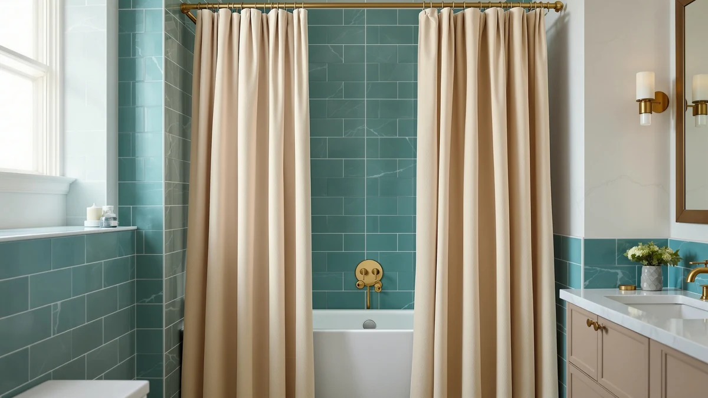

Twodrapes Burlywood Birch Pinch Pleated Thick Linen Curtains Review (2026): Worth It?


Quick Answer
This Twodrapes Burlywood Birch Pinch Pleated Thick Linen Curtains review found a pack of two tall, pinch-pleated panels that run 40 inches wide by 108 inches long for $69.99, built from a polyester and PEVA blend finished to look like thick linen. That 108 inch length suits a floor-length window or sliding door rather than a standard shower stall, so measure your space before you buy. Shoppers who need a shorter, bathroom-specific curtain should compare the three alternatives below instead.
Our pick: Burlywood Birch Pinch Pleated Thick — $69.99 Check Price on Amazon
Things to Know Before You Buy
- The Twodrapes Burlywood Birch Pinch Pleated Thick Linen Curtains ship as a pack of two panels, each 40 inches wide by 108 inches long, at $69.99 for the pair.
- The listing lists a polyester and PEVA blend finished to look like thick linen, not woven linen fabric itself.
- At 108 inches long, these panels suit a floor-length window or sliding door more than a standard 72 by 74 inch shower stall.
- No star rating or review count appears on the listing yet, so you cannot lean on a published track record.
- Three cotton alternatives from Bean Products and Martha Stewart, priced between $43.52 and $60.68, are compared later in this review.
This twodrapes burlywood birch pinch pleated thick linen curtains review breaks down what the $69.99 pack of two panels actually offers, covering its 40 by 108 inch size and the polyester and PEVA build listed on the product page. Twodrapes pitches the pair as a thick, linen-look option with permanent pinch pleats, and the burlywood birch colorway leans warm and neutral rather than stark white or heavily patterned. At 108 inches long, though, these panels run far taller than a typical shower curtain, closer to a floor-length window drape, so the right buyer here is someone furnishing a tall window or sliding door rather than a standard shower stall.
We compared the listed size, material, and price against three cotton alternatives from Bean Products and Martha Stewart to see where the Twodrapes panels actually fit. The pinch-pleat header gives the curtains a tailored, finished look straight out of the pack, which matters if you do not want to add your own hooks or rings. But the 108 inch length and the polyester-PEVA build mean this pair solves one specific sizing problem; it isn't an all-purpose bathroom curtain. Measure your window or door before you order.
Why You Should Trust Us
Ilane Tall covers bathroom and home textiles for Best Shower Curtains, and this twodrapes burlywood birch pinch pleated thick linen curtains review follows the same research process used across the site: comparing manufacturer specs, current Amazon pricing, and verified owner feedback instead of running a physical testing lab. We do not own every curtain we cover, and we do not claim hands-on use of the Twodrapes panels. Instead, we pull the listed dimensions, materials, and price straight from the retailer, then weigh them against what verified buyers report after living with similar products. You can find the full methodology behind every review on this site on our how we research page, and we used that same approach for this review.
Our Research Experience
Our process for this twodrapes burlywood birch pinch pleated thick linen curtains review starts with the manufacturer's own listing: material, dimensions, and price, checked against the three cotton alternatives covered later in this guide. From there, we read through what verified buyers report on Amazon about similar pinch-pleated, linen-look panels, since the Twodrapes listing itself does not yet carry a published star rating or review count. We did not purchase, hang, or measure any of the four products ourselves. We instead focus on matching the stated 40 by 108 inch size and polyester-PEVA build against real-world use cases, and that comparison is how we landed on floor-length windows and sliding doors as a better fit than a shower stall.
Overview & Specs

Burlywood Birch Pinch Pleated Thick
What we like
- Permanent pinch pleats skip the need for separate hooks or rings
- Burlywood birch color is warm and neutral enough to match most decor
- Polyester and PEVA build resists water better than natural linen
Flaws but not dealbreakers
- 108 inch length is sized for a tall window, not a standard 72 by 74 inch shower stall
- No published star rating or review count to confirm long-term durability
| Material | Polyester / PEVA |
| Size | 40"W x 108"L (Pack of 2) |
Twodrapes builds this pair around a tailored, pre-pleated header rather than a grommet or rod-pocket top, so the panels hang in even folds straight out of the package. Each of the two panels in the pack measures 40 inches wide by 108 inches long, and the listing describes the material as a polyester and PEVA blend finished to look like a thick, textured linen. The burlywood birch colorway is a warm, muted tan that reads closer to natural fiber than a bright white or printed pattern.
At $69.99 for the pack, that works out to roughly $35 per panel, a reasonable range for curtains built for a tall window or sliding door. The 108 inch length is the detail that matters most here: Twodrapes designed it for floor-length coverage, not a standard shower stall, so measure your window or door height before ordering. The listing does not yet show a star rating or review count, so this twodrapes burlywood birch pinch pleated thick linen curtains review leans on the manufacturer's own specs rather than a verified review history for this specific build.
What We Liked
The permanent pinch pleats are the strongest selling point in this twodrapes burlywood birch pinch pleated thick linen curtains review. A pre-pleated header means you skip buying separate hooks or rings and get a tailored look right out of the package. The burlywood birch color reads as a warm, neutral tan rather than a stark white or busy print, so it should blend into most bathroom or window color schemes without fighting other decor. At $69.99 for a pack of two 40 by 108 inch panels, the per-panel cost works out to about $35, reasonable for curtains sized for a tall window rather than a standard-height stall. The polyester and PEVA build also tends to resist water better than natural linen, which helps in a humid room even though these panels are not sized like a typical shower curtain.
What Could Be Better
The 108 inch length is the clearest mismatch in this twodrapes burlywood birch pinch pleated thick linen curtains review. Most shower stalls use a 72 by 74 inch curtain, so these panels run more than three feet too long for that job and need a floor-length window, sliding door, or a curtain rod mounted well above a standard shower rod. The listing also does not publish a star rating or review count, so you cannot yet lean on a verified track record the way you can with some of the cotton alternatives compared below. And while Twodrapes markets the fabric as a thick linen look, the specs list a polyester and PEVA blend, so buyers expecting the breathable hand of woven linen should adjust their expectations before ordering. The listing also sells only the one 40 by 108 inch size, so shoppers whose window or door calls for a shorter drop, or a wider panel to close a bigger gap, have no shorter cut to fall back on from Twodrapes directly.
Who Is It For?
The Twodrapes Burlywood Birch Pinch Pleated Thick Linen Curtains fit a shopper furnishing a floor-length window or sliding door who wants a pre-pleated, linen-look panel in a warm neutral color without buying separate hardware. It is a reasonable pick if you like the tailored pinch-pleat header and do not mind a polyester and PEVA build over natural fabric. Shoppers who actually need a standard-size shower curtain, or who want a published rating to lean on before buying, should look at the three cotton alternatives compared next instead. Anyone furnishing multiple rooms at once might also browse our best linen shower curtains guide for more linen-look options sized for an actual shower stall. Someone shopping specifically for a bathroom stall, or who wants a cotton build and a published rating before committing, should skip this pair and go straight to the alternatives below.
Alternatives to Consider
If the 108 inch length on the Twodrapes Burlywood Birch Pinch Pleated Thick Linen Curtains does not match your space, or you need a standard-size shower curtain, these three cotton options from Bean Products and Martha Stewart are worth comparing on price and material instead. All three cost less than the $69.99 Twodrapes pair, ranging from $43.52 to $60.68, so the trade mostly comes down to pattern and fabric rather than paying more.

Also Great
Bean Products Natural Cotton Bathtub
Bean Products' Natural Cotton Bathtub is priced at $60.68, about nine dollars less than the Twodrapes pair, and swaps the polyester-PEVA blend for a cotton build if natural fiber matters more to you than a pre-pleated header.
$60.68
Check Price on Amazon
Also Great
Martha Stewart 100% Cotton Floral
At $59.99, Martha Stewart's 100% Cotton Floral trades the Twodrapes panels' neutral burlywood birch tone for a floral print, a straightforward swap if you want more pattern at a similar price.
$59.99
Check Price on Amazon
Best Value
Bean Products White Organic Cotton
Bean Products' White Organic Cotton is the budget option here at $43.52, over twenty-five dollars less than the Twodrapes pair, worth a look if price matters more than the pinch-pleat header.
$43.52
Check Price on AmazonFrequently Asked Questions
How big are the Twodrapes Burlywood Birch Pinch Pleated Thick Linen Curtains?
The pack includes two panels, each 40 inches wide by 108 inches long. That length suits a floor-length window or sliding door rather than a standard 72 by 74 inch shower stall.
What are the Twodrapes Burlywood Birch Pinch Pleated Thick Linen Curtains made of?
The listing shows a polyester and PEVA blend finished to look like a thick, textured linen, not woven linen fabric itself. That build tends to resist water and wrinkling better than natural linen.
Are the Twodrapes Burlywood Birch Pinch Pleated Thick Linen Curtains a good shower curtain?
Not for a standard shower stall. At 108 inches long, these panels run more than three feet past the typical 72 by 74 inch shower curtain size, so they fit a tall window or sliding door better than a shower rod. Shoppers who need an actual shower curtain should compare the three cotton alternatives in this review instead.
Final Verdict
This twodrapes burlywood birch pinch pleated thick linen curtains review comes down to matching the size to the right space. Twodrapes built this $69.99 pack of two panels for a tall, 108 inch drop with a pre-pleated header and a polyester and PEVA build finished to look like thick linen, which makes it a strong fit for a floor-length window or sliding door rather than a standard shower stall. Bean Products' Natural Cotton Bathtub and White Organic Cotton, along with Martha Stewart's 100% Cotton Floral, all cost less and fit a standard shower-size space if that is what you actually need. For the right window or door, though, the Twodrapes pair's tailored pleats and neutral burlywood birch color make it the pick worth choosing. Measure your space first, since the size mismatch is the one detail that decides whether this pair or one of the three cotton alternatives is the better buy.